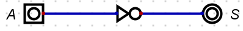
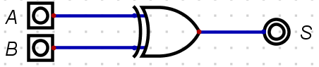
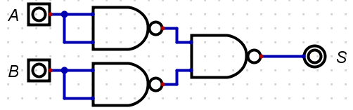
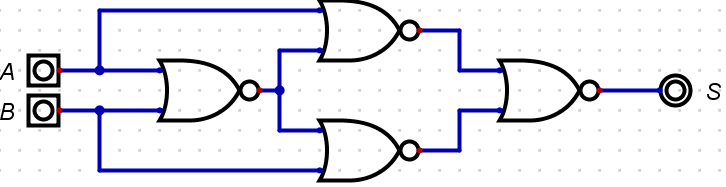
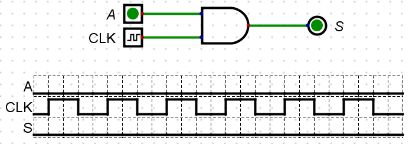

Introduction
Special thanks to Seb Blair for preparing this mdbook and allowing us access to it.
This mdBook will grow over the duration of this module with new labs/workshops and general content needed to test and increase your knowledge of computer programming.
|
The mdBook can be accessed outside of blackboard and is mobile and tablet friendly:
|
Accessibility and Navigation
There are several methods for navigating through the chapters (i.e., sessions).
The sidebar on the left provides a list of all chapters/sessions. Clicking on any of the chapter/session titles will load that page.
The sidebar may not automatically appear if the window is too narrow, particularly on mobile displays. In that situation, the menu icon () at the top-left of the page can be pressed to open and close the sidebar.
The arrow buttons at the bottom of the page can be used to navigate to the previous or the next chapter.
The left and right arrow keys on the keyboard can be used to navigate to the previous or the next chapter.
Top menu bar
The menu bar at the top of the page provides some icons for interacting with this mdBook. The icons displayed will depend on the settings of how the book was generated.
| Icon | Description |
|---|---|
| Opens and closes the chapter listing sidebar. | |
| Opens a picker to choose a different color theme. | |
| Opens a search bar for searching within the book. | |
| Instructs the web browser to print the entire book. | |
| Opens a link to the website that hosts the source code of the book. | |
| Opens a page to directly edit the source of the page you are currently reading. |
Tapping the menu bar will scroll the page to the top.
Search
Each book has a built-in search system.
Pressing the search icon () in the menu bar, or pressing the S key on the keyboard will open an input box for entering search terms.
Typing some terms will show matching chapters and sections in real time.
Clicking any of the results will jump to that section. The up and down arrow keys can be used to navigate the results, and enter will open the highlighted section.
After loading a search result, the matching search terms will be highlighted in the text.
Clicking a highlighted word or pressing the Esc key will remove the highlighting.
You have the ability to change the theme of the mdBook by clicking the icon on the top left mdBook. Additionally, there is a toggle for the table of content, and a search tool.
Issues
If you notice a mistake you can notify the module team who can make the correction. You may be instructed to raise an actual github issue.
Printing
Currently the mdBook is approximately 60+ pages, and the environmental impact per page is app. 10.2L water, 2g CO\(_2\) and 2g wood. Therefore, app. 600L water, 120g CO\(_2\) and 120g wood would be needed to produce a paper copy of this mdBook.
The environmental effects of paper production include deforestation, the use of enormous amounts of energy and water, as well as air pollution and waste problems. Paper accounts for around 26% of total waste at landfills.
In other words, please print only if this is really necessary.
Exploring Logic Gates
The Exploring Logic Gates lab is designed for you to explore the basics of logic gates, simple logic circuits, and truth tables. You will be using Logic Simulator, a simulation tool for logic gates and other computer hardware.
IMPORTANT
Download and extract Logic Simulator to a convenient place on your OneDrive or other cloud storage centre so the application is accessible on any machine you use.
Digital source code and project can be found on here:
- https://learn.canterbury.ac.uk/bbcswebdav/pid-3692905-dt-content-rid-7006465_1/xid-7006465_1 or...
- From here logic_simulator
If you are stuck ASK FOR HELP.
Once downloaded, place in your OneDrive and unzip. Navigate to the Digital application and run.
- For Linux, see this video: Linux Installer Guide
Watch the video provided in the link below, where you are guided through the basic operations of Digital that are needed for the this lab:
Once you have watched this you may continue with the lab sheet.
Exercise One
In this exercise you are going to familiarise yourself with placing components and operating the Logic Gates.
The image below shows the location of where you will find the Input and Output components. You will need to select at least one Output and one or two Input components:

Next, logic gates are selected, as seen in the image below:

NOT
Firstly, set up the the circuit as seen below:

Press the the play icon, ►, and toggle the input component labelled as 'A'. Does it behave as per the truth table below?
| A | S |
|---|---|
| 0 | 1 |
| 1 | 0 |
CALL TO ACTION
Save the circuit in OneDrive as
Logic-Gates-Exercise-1
OR
Continuing in the same file, add the OR gate underneath the NOT circuit so that your new circuit looks like this:

Press the the play icon, ►, and toggle the input component labelled as 'A' and 'B'. Does it behave as per the truth table below?
| A | B | S |
|---|---|---|
| 0 | 0 | 0 |
| 1 | 0 | 1 |
| 0 | 1 | 1 |
| 1 | 1 | 1 |
CALL TO ACTION
Re-save the circuit.
AND
Continuing in the same file, add the AND gate underneath the OR so that your new circuit looks like the image below:

Press the the play icon, ►, and toggle the input component labelled as 'A' and 'B'. Does it behave as per the table below?
| A | B | S |
|---|---|---|
| 0 | 0 | 0 |
| 1 | 0 | 0 |
| 0 | 1 | 0 |
| 1 | 1 | 1 |
CALL TO ACTION
Re-save the circuit again.
XOR
Continuing in the same file, add the XOR gate underneath the AND circuit so that your new circuit looks like the image below:

Press the the play icon, ►, and toggle the input component labelled as 'A' and 'B'. Does it behave as per the truth table below?
| A | B | S |
|---|---|---|
| 0 | 0 | 0 |
| 1 | 0 | 1 |
| 0 | 1 | 1 |
| 1 | 1 | 0 |
CALL TO ACTION
Re-save the circuit again.
XNOR
Continuing in the same file, add the XNOR gate underneath the XOR circuit so that your new circuit looks like image below:

Press the the play icon, ►, and toggle the input component labelled as 'A' and 'B'. Does it behave as per the truth table below?
| A | B | S |
|---|---|---|
| 0 | 0 | 1 |
| 1 | 0 | 0 |
| 0 | 1 | 0 |
| 1 | 1 | 1 |
CALL TO ACTION
Re-save the circuit again.
NOR
Continuing in the same file, add the NOR gate underneath the XNOR circuit so that your new circuit looks like the image below:

Press the the play icon, ►, and toggle the input component labelled as 'A' and 'B'. Does it behave as per the truth table below?
| A | B | S |
|---|---|---|
| 0 | 0 | 1 |
| 1 | 0 | 0 |
| 0 | 1 | 0 |
| 1 | 1 | 0 |
CALL TO ACTION
Re-save the circuit again.
NAND
Continuing in the same file, add the NAND gate underneath the NOR circuit so that your new circuit looks like the image below:

Press the the play icon, ►, and toggle the input component labelled as 'A' and 'B'. Does it behave as per the truth tabel below?
| A | B | S |
|---|---|---|
| 0 | 0 | 1 |
| 1 | 0 | 1 |
| 0 | 1 | 1 |
| 1 | 1 | 0 |
CALL TO ACTION
Re-save the circuit again.
Exercise Two: Investigation
The following universal logic gate circuits below can be constructed to create any of the fundamental gates. Investigate with the construction of truth tables: match a universal logic gate circuit with a fundamental logic gate.
Universal Logic Circuit 1
CALL TO ACTION
Create a new file.
Firstly, set up the the circuit as seen below:

Press the the play icon, ►, and toggle the input component labelled as 'A'. What fundamental gate is this?
-
AND
-
XNOR
-
NOT
-
OR
Click for solution
- NOT
Once you have found the answer, navigate back to and select Components -> IO and label the circuit with your answer.
CALL TO ACTION
Save the circuit in OneDrive and call it
Logic-Gates-Exercise-2
Universal Logic Circuit 2
Set up the the circuit in image below and place the new circuit beneath the last circuit created.

Press the the play icon, ►, and toggle the input components labelled as 'A' and 'B'. What fundamental gate is this?
-
XNOR
-
OR
-
NOT
-
NAND
-
AND
Click for solution
- AND
Once you have found the answer, navigate back to and select Components -> IO and label the circuit with your answer.
CALL TO ACTION
Re-save the circuit.
Universal Logic Circuit 3
Set up the the circuit below and place it beneath the last circuit created.

Press the the play icon, ►, and toggle the input components labelled as 'A' and 'B'. What fundamental gate is this?
-
XNOR
-
OR
-
NOT
-
NAND
-
NOR
Click for solution
- OR
Once you have found the answer, navigate back to and select Components -> IO and label the circuit with your answer.
CALL TO ACTION
Re-save the circuit.
Universal Logic Circuit 4
Set up the the circuit as seen below, beneath the last circuit created.

Press the the play icon, ►, and toggle the input component labelled as 'A' and 'B'. What fundamental gate is this?
-
XOR
-
OR
-
NOT
-
AND
-
NOR
Click for solution
- XNOR
Once you have found the answer, navigate back to and select Components -> IO and label the circuit with your answer.
CALL TO ACTION
Re-save the circuit.
Universal Logic Circuit 5
Set up the circuit up as seen below, beneath the last circuit created.

Press the the play icon, ►, and toggle the input components labelled as 'A' and 'B'. What fundamental gate is this?
-
NOT
-
XOR
-
OR
-
AND
-
XNOR
Click for solution
- XOR
Once you have found the answer, navigate back to and select Components -> IO and label the circuit with your answer.
CALL TO ACTION
- Re-save the circuit.
- Go to your preferred search engine and search for 'Universal gate equivalents' and replicate the circuits we have not done in this file.
Exercise Four: Experimentation
You are now going to use the clock to generate signals: ON/OFF or 1/0 or HIGH/LOW or 0V/5V.
CALL TO ACTION
Create a new file.
Now get the components in the following order, so that your circuit looks like the one below:
-
AND Gate
-
Input
-
Clock Input
-
Output
-
Data Graph

Like with all other circuits so far, right click a component and them label as shown above.
You will notice that when you right click the Clock Input you will get additional options. Replicate the image below:

Make sure that the Data Graph component option Max number of steps to is set to 25.
When you run this circuit you should see something similar to the image below:

CALL TO ACTION
- Save the circuit in OneDrive.
- Experiment with different Clock Input Frequencies. What observations can you make? Discuss with your peers or with the tutor.
- Replace the
with anotherand chose different frequencies. Look at the Data Graph - is there a pattern? Is it random? Discuss with your peers or with the tutor.
Exercise Five: Investigate
You are now going to create arithmetic circuits: Half Adder and Full Adder.
CALL TO ACTION
Create a new file.
Half Adder
Reproduce the Half Adder as seen in below:
 {#fig:Half_Adder}
{#fig:Half_Adder}
... and then simulate so you can complete the truth table below:
| A | B | S | Cout |
|---|---|---|---|
Click for solution
| A | B | S | Cout |
|---|---|---|---|
| 0 | 0 | 0 | 0 |
| 0 | 1 | 1 | 0 |
| 1 | 0 | 1 | 0 |
| 1 | 1 | 0 | 1 |
Full Adder
Produce a Full Adder and then simulate so you can populate the table. You should refer to the lecture slides.
| A | B | Cin | S | Cout |
|---|---|---|---|---|
Click for solution
| A | B | Cin | S | Cout |
|---|---|---|---|---|
| 0 | 0 | 0 | 0 | 0 |
| 0 | 0 | 1 | 1 | 0 |
| 0 | 1 | 0 | 1 | 0 |
| 0 | 1 | 1 | 0 | 1 |
| 1 | 0 | 0 | 1 | 0 |
| 1 | 0 | 1 | 0 | 1 |
| 1 | 1 | 0 | 0 | 1 |
| 1 | 1 | 1 | 1 | 1 |
CALL TO ACTION
- Save the circuit in OneDrive.
- Experiment with different Clock Input Frequencies. What observations can you make? Discuss with the a peer or with the tutor.
- Replace the
with anotherand chose different frequencies. Look at the Data Graph - is there a pattern? Is it random? Discuss with your peers or with the tutor.
Exercise Six: Research and Implement
Investigate & research the circuit of a 2-bit decoder. Implement this and verify operation through a complete truth table and simulation.
CALL TO ACTION
Create a new file.
Problem to Logic Circuit Design
The Problem to Logic Circuit Design lab is designed for you to get on with problem solving.
As described in the lecture slides, simulate the circuit using Digital Simulator for the following problem specification of an alarm to ring. To understand how to use Digital Simulator, revisit Logic Gates worksheet.
Example Scenario
The alarm will ring if the alarm switch is turned on and either the door or window are not closed. Variables are given below:
- Output Variable: Alarm = F ; 1 ON, 0 OFF
- Input variables : Alarm switch = A; 1 ON, 0 OFF
- Door status = B; 1 CLOSED, 0 OPEN
- Window Status = C ;1 CLOSED, 0 OPEN
The image below shows the components used for the minimised circuit. You need to place these components in the work area of Digital editor and then, after wiring up, simulate and check if the outputs are the same as in the truth table (see tutorial slides) for all possible inputs.

CALL TO ACTION
- Can you identify each gate without using Digital or notes?
- Wire up the circuit.
- What is the Boolean Equation for this circuit?
- Minimise the Boolean Equation.
- Redraw the circuit based on the minimised Boolean Equation.
-
Test the circuit for the following test conditions:
-
ABC = 110
-
ABC = 010
-
Example Scenario Solution
The below circuit is the implementation of the following equation, which requires 5 gates:
This circuit can be represented using the Boolean Equation below:
\(S = A.\overline{B} + A.\overline{C}\)
The minimisation process therefore is:
\(S = A.\overline{B} + A.\overline{C}\)
\(S = A.\overline{B} +\) A \(.\overline{C}\)
\(S = A.(\overline{B} + \overline{C})\)
Which, in turn, produces the following images, with 4 gates:

The circuit below shows the example simulation for the test condition of ABC = 110:

The same circuit, with a change in input status, shows the example simulation for the test condition of ABC = 010:

Scenario 1
CALL TO ACTION
Create a new file.
You need to create a logic circuit for a warning light which will be placed on a skip at night to warn any approaching drivers that there is a hazard on the road. The light should only operate in the dark and it should be flashing. The light sensor produces a logic 0 in the daylight, and Logic 1 in the dark. Follow the steps below:
- Find the input and output variables
- Construct the Truth Table
- Write the Boolean Equation: "Output = Sum of the Standard ProductTerms"
- If needed, minimise the equation using Boolean Algebra
- Draw logic circuit for the minimised equation
- Using Digital simulator, do a multi-step timing diagram simulation
Your simulation should have the same logic as seen in the image below.

To understand how to do a Timing diagram simulation (multistep) in Digital, revisit Logic Gates worksheet.
CALL TO ACTION
- Save the circuit in OneDrive and call it
Problem_To_Solution_Experiment_One
Click for Solution
To identify, you could create a simple block diagram of the system like below:
You will notice that the two inputs have now been given a letter so that we can identify them in a truth table. In this case there are only two inputs, and therefore there will be four possible combinations of A and B that we have to consider. The next stage is to construct a truth table to show all the possible input conditions, and for each set of inputs determine when an output is required.
| Input A | Input B | Output S | Comments |
|---|---|---|---|
| 0 | 0 | 0 | Light Sensor (A) = 0 \(\equiv\) Daylight, Pulse Generator B) = 0 \(\equiv\) Off, Output S = 0 Off |
| 0 | 1 | 0 | Light Sensor (A) = 1 \(\equiv\) Dark, Pulse Generator B) = 0 \(\equiv\) Off, Output S = 0 Off |
| 1 | 0 | 0 | Light Sensor (A) = 0 \(\equiv\) Daylight, Pulse Generator B) = 1 \(\equiv\) On, Output S = 0 Off |
| 1 | 1 | 0 | Light Sensor (A) = 1 \(\equiv\) Daylight, Pulse Generator B) = 1 \(\equiv\) On, Output S = 1 On Z |
From the truth table we can get the Boolean Equation. Remember, we only need to write out the equation where there is a 1 in the Output column:
\(S = A.B\)
There is only one product term, so this must be the minimised equation. You should be able to identify the logic gate from the truth table and the Boolean Algebra. See the image directly below for the logic gate solution:

Now you should be able to create the circuit in Digital, like the following image:

Scenario 2
CALL TO ACTION
Create a new file.
Create a logic circuit for the buzzer of a car, and it should buzz when:
- the engine is on, the door is closed, and the seat belt is unbuckled
- the engine is on, the door is open
Assume there are appropriate binary sensors for the engine, door and seat belt.
Create and simulate the circuit of the buzzer following the steps below:
- Find input and output variables
- Construct the Truth Table
- Write the Boolean Equation: "Output = Sum of the Standard Product terms"
- If needed, minimise equation using Boolean Algebra
- Draw logic circuit for the minimised equation
- Using Digital Simulator, simulate the circuit
CALL TO ACTION
Save the circuit in OneDrive and call it
Problem_To_Solution_Scenario_Two
Click for Solution
Finding input and output variables:
- Output, Buzzer , S = 1 means ON, 0 means OFF
- Inputs, Engine Key, A = 1 means ON, 0 means OFF
- Car Door, B=1 means Open, 0 means Closed
- Seat belt , C=1 means buckled, 0 means Unbuckled
Using the list of input and output variables, the following truth table can be created:
| A | B | C | S |
|---|---|---|---|
| 0 | 0 | 0 | 0 |
| 0 | 0 | 1 | 0 |
| 0 | 1 | 0 | 0 |
| 0 | 1 | 1 | 0 |
| 1 | 0 | 0 | 1 |
| 1 | 0 | 1 | 0 |
| 1 | 1 | 0 | 1 |
| 1 | 1 | 1 | 1 |
From the truth table the Boolean Equation can now be derived using the Sum of the Standard Product Terms:
\(S = ABC + AB\overline{C} + A\overline{B} \overline{C}\)
\(S = ABC + \)AB \(\overline{C} + A\overline{B} \overline{C}\) (remember: \(\overline{C} + C = 1)\)
\(S = AB(C +\overline{C}) + A\overline{B} \overline{C}\)
\(S = AB(1) + A\overline{B} \overline{C}\)
\(S = AB + A\overline{B} \overline{C}\)
\(S = AB + \) A \(\overline{B} \overline{C}\)
\(S = A(B + \overline{B} \overline{C})\)
\(S = A(B +\) B \(\overline{C})\)
(remember: a literal on its own cancels its inverted version).
\(S = A(B + \overline{C})\)
The first image shows the logic circuit implementation of the minimised Boolean Equation:
The image below shows the example simulation for the test condition of ABC = 100:

The circuit below now shows the example simulation for the test condition of ABC = 101:

Finally, the image below now shows the example simulation for the test condition for ABC = 110:

Workshop on Boolean Algebra
This Workshop on Boolean Algebra is designed for you to practice Boolean equations and Boolean Algebra laws.
Minimising Boolean Expressions
We can use Commutative, Associative, and Distributive Laws to manipulate Boolean expressions.
BOOLEAN LAWS
Commutative Laws
-
\(A + B \Longleftrightarrow B + A\)
-
\(A.B \Longleftrightarrow B.A\)
Associative Laws
-
\((A + B) + C \Longleftrightarrow A + (B + C)\)
-
\((A.B).C \Longleftrightarrow A.(B.C)\)
Distributive Laws
-
\(A + (B + C) \Longleftrightarrow (A + B) + (A + C)\)
-
\(A.(B.C) \Longleftrightarrow (A.B) + (A.C)\)
Axioms
The following rules (axioms) can also be used to minimise Boolean Expressions:
1.
-
A literal by itself cancels out any term that contains it (Absorption):
- \(A + A.B + A.B.C \Longrightarrow A + \)
A.B+A.B.C\(\Longrightarrow A\)
- \(A + A.B + A.B.C \Longrightarrow A + \)
2.
-
A literal by itself knocks out its NOT'ed opposite that appears in any 'minterm' (Absorption):
- \(\overline{A} + A.\overline{B} + A.C \Longrightarrow \overline{A} +\)
A\(.\overline{B} +\)A\(.C \Longrightarrow \overline{A} + \overline{B} + C\)
- \(\overline{A} + A.\overline{B} + A.C \Longrightarrow \overline{A} +\)
Exercise: One
Minimise the following Boolean Expressions:
1. \(\hspace{1.75em}S = \overline{A} + A.C + \overline{B}.C\)
Click for Solution
\(S = \overline{A} + \)A\(.C + \overline{B}.C\)
\(S = \overline{A} + C +\) B.C
\(S = \overline{A} + C\)
2. \(\hspace{1.75em}S = A.C + A.B.C + A.B.\overline{C}\)
Click for Solution
\(S = A.C + A.B.(C + \overline{C})\)
\(S = A.C + A.B.(1)\)
\(S = A.C + A.B\)
3. \(\hspace{1.75em}S = \overline{B} + A.B + A.\overline{B}.C\)
Click for Solution
\(S = \overline{B} + A.\) B \(+\) A.B.C
\(S = \overline{B} + A\)
4. \(\hspace{1.75em}S = \overline{A}.\overline{B}.\overline{C} + A.\overline{B}.\overline{C} + A.C\)
Click for Solution
\(S = \overline{B}.\overline{C}.(A + \overline{A}) + A.C\)
\(S = \overline{B}.\overline{C}.(1) + A.C\)
\(S = \overline{B}.\overline{C} + A.C\)
5. \(\hspace{1.75em}S = C + A.\overline{C} + B.C + A.B.C\)
Click for Solution
\(S = C + A.\)C \(+\) B.C \(+\) A.B.C
\(S = C + A\)
6. \(\hspace{1.75em}S = A.B.\overline{C} + A.B.C + A.\overline{B}.\overline{C} + A.\overline{B}.C + \overline{A}.B.C + \overline{A}.B.\overline{C}\)
Click for Solution
\(S = A.B.(\overline{C} + C) + A.\overline{B}.(\overline{C} + C) + \overline{A}.B.(C + \overline{C})\)
\(S = A.B.(1) + A.\overline{B}.(1) + \overline{A}.B.(1)\)
\(S = A.B + A.\overline{B} + \overline{A}.B\)
\(S = A.(B + \overline{B}) + \overline{A}.B\)
\(S = A.(1) + \overline{A}.B\)
\(S = A +\)A\(.B\)
\(S = A + B\)
7. \(\hspace{1.75em}S = A + B.C + \overline{A}.B.C\)
Click for Solution
\(S = A + B.C +\) A \(.B.C\)
\(S = A + B.C +\) B.C
\(S = A + B.C\)
8. \(\hspace{1.75em}S = B + \overline{A}.B.\overline{C} + A.B.\overline{C} + \overline{A}.C\)
Click for Solution
\(S = B +\) A.B.C \(+\) A.B.C \(+ \overline{A}.C\)
\(S = B + \overline{A}.C\)
Exercise: Two
For each of the following truth tables produce the standard Sum of the Product Terms for the output \(S\), then reduce the Boolean expression to a simpler expression using Boolean algebra.
1.
| A | B | S |
|---|---|---|
| 0 | 0 | 1 |
| 0 | 1 | 1 |
| 1 | 0 | 1 |
| 1 | 1 | 0 |
Click for Solution
\(S = \overline{A}.\overline{B} + \overline{A}.B + A.\overline{B}\)
\(S = \overline{A}.(\overline{B} + B) + A.\overline{B}\)
\(S = \overline{A}.(1) + A.\overline{B}\)
\(S = \overline{A} + A.\overline{B}\)
\(S = \overline{A} +\) A}\(.\overline{B}\)
\(S = \overline{A} + \overline{B}\)
2.
| A | B | S |
|---|---|---|
| 0 | 0 | 0 |
| 0 | 1 | 1 |
| 1 | 0 | 1 |
| 1 | 1 | 0 |
Click for Solution
\(S = \overline{A}B + A\overline{B}\)
3.
| A | B | C | S |
|---|---|---|---|
| 0 | 0 | 0 | 1 |
| 0 | 0 | 1 | 1 |
| 0 | 1 | 0 | 0 |
| 0 | 1 | 1 | 0 |
| 1 | 0 | 0 | 0 |
| 1 | 0 | 1 | 0 |
| 1 | 1 | 0 | 0 |
| 1 | 1 | 1 | 0 |
Click for Solution
\(S = \overline{A}.\overline{B}.\overline{C} + \overline{A}.\overline{B}.C\)
\(S = \overline{A}.\overline{B}.(\overline{C} + C)\)
\(S = \overline{A}.\overline{B}.(1)\)
\(S = \overline{A}.\overline{B}\)
4.
| A | B | C | S |
|---|---|---|---|
| 0 | 0 | 0 | 0 |
| 0 | 0 | 1 | 1 |
| 0 | 1 | 0 | 0 |
| 0 | 1 | 1 | 1 |
| 1 | 0 | 0 | 0 |
| 1 | 0 | 1 | 1 |
| 1 | 1 | 0 | 0 |
| 1 | 1 | 1 | 1 |
Click for Solution
\(S = \overline{A}.\overline{B}.C + \overline{A}.B.C + A.\overline{B}.C + A.B.C\)
\(S = \overline{B}.C.(\overline{A} + A) + B.C.(\overline{A} + A)\)
\(S = \overline{B}.C.(1) + B.C.(1)\)
\(S = \overline{B}.C + B.C\)
\(S = C.(\overline{B} + B)\)
\(S = C.(1)\)
\(S = C\)
5.
| A | B | C | S |
|---|---|---|---|
| 0 | 0 | 0 | 1 |
| 0 | 0 | 1 | 1 |
| 0 | 1 | 0 | 0 |
| 0 | 1 | 1 | 1 |
| 1 | 0 | 0 | 0 |
| 1 | 0 | 1 | 0 |
| 1 | 1 | 0 | 0 |
| 1 | 1 | 1 | 1 |
Click for Solution
\(S = \overline{A}.\overline{B}.\overline{C} + \overline{A}.\overline{B}.C + \overline{A}.B.C + A.B.C\)
\(S = \overline{A}.\overline{B}.(\overline{C} + C) + B.C.(\overline{A} + A)\)
\(S = \overline{A}.\overline{B}.(1) + B.C.(1)\)
\(S = \overline{A}.\overline{B} + B.C\)
6.
| A | B | C | S |
|---|---|---|---|
| 0 | 0 | 0 | 0 |
| 0 | 0 | 1 | 0 |
| 0 | 1 | 0 | 1 |
| 0 | 1 | 1 | 1 |
| 1 | 0 | 0 | 0 |
| 1 | 0 | 1 | 1 |
| 1 | 1 | 0 | 1 |
| 1 | 1 | 1 | 1 |
Click for Solution
\(S = \overline{A}.\overline{B}.\overline{C} + \overline{A}.\overline{B}.C + \overline{A}.B.C + A.B.C\)
\(S = \overline{A}.\overline{B}.(\overline{C} + C) + B.C.(\overline{A} + A)\)
\(S = \overline{A}.\overline{B}.(1) + B.C.(1)\)
\(S = \overline{A}.\overline{B} + B.C\)
7.
| A | B | C | S |
|---|---|---|---|
| 0 | 0 | 0 | 0 |
| 0 | 0 | 1 | 0 |
| 0 | 1 | 0 | 1 |
| 0 | 1 | 1 | 1 |
| 1 | 0 | 0 | 0 |
| 1 | 0 | 1 | 1 |
| 1 | 1 | 0 | 1 |
| 1 | 1 | 1 | 1 |
Click for Solution
\(S = \overline{A}.B.\overline{C} + \overline{A}.B.C + A.\overline{B}.C + A.B.\overline{C} + A.B.C\)
\(S = \overline{A}.B.(\overline{C} + C) + A.\overline{B}.C + A.\overline{B}.(\overline{C} + C)\)
\(S = \overline{A}.B.(1) + A.\overline{B}.C + A.\overline{B}.(1)\)
\(S = \overline{A}.B + A.\overline{B}.C + A.\overline{B}\)
\(S = B.(\overline{A} + A) + A.\overline{B}.C\)
\(S = B.(1) + A.\overline{B}.C\)
\(S = B + A.\overline{B}.C\)
\(S = B + A.\) B \(.C\)
\(S = B + A.C\)
8.
| A | B | C | S |
|---|---|---|---|
| 0 | 0 | 0 | 0 |
| 0 | 0 | 1 | 0 |
| 0 | 1 | 0 | 0 |
| 0 | 1 | 1 | 1 |
| 1 | 0 | 0 | 1 |
| 1 | 0 | 1 | 1 |
| 1 | 1 | 0 | 1 |
| 1 | 1 | 1 | 1 |
Click for Solution
\(S = \overline{A}.B.C + A.\overline{B}.\overline{C} + A.\overline{B}.C + A.B.\overline{C} + A.B.C\)
\(S = \overline{A}.B.C + A.\overline{B}.(\overline{C} + C) + A.B.(\overline{C} + C)\)
\(S = \overline{A}.B.C + A.\overline{B}.(1) + A.B.(1)\)
\(S = \overline{A}.B.C + A.\overline{B} + A.B\)
\(S = \overline{A}.B.C + A.(\overline{B} + B)\)
\(S = \overline{A}.B.C + A.(1)\)
\(S = \overline{A}.B.C + A\)
\(S =\) A \(B.C + A\)
\(S = B.C + A\)
Number Systems Exercises
This Number System lab is designed for you to practice converting between different bases.
Binary Numbers
Binary is a base 2 numbering system. There are only two symbols used, 0 and 1.
Binary Positional Values
| MSB | LSB | |||||||||
|---|---|---|---|---|---|---|---|---|---|---|
| $$2^{10}$$ | $$2^{9}$$ | $$2^{8}$$ | $$2^{7}$$ | $$2^{6}$$ | $$2^{5}$$ | $$2^{4}$$ | $$2^{3}$$ | $$2^{2}$$ | $$2^{1}$$ | $$2^{0}$$ |
| 1024 | 512 | 256 | 128 | 64 | 32 | 16 | 8 | 4 | 2 | 1 |
Binary to Decimal Conversion
To convert from binary to decimal, we need to add together the positional values for all the columns containing a 1. We ignore the columns with a 0, as they have nothing in them.
| MSB | LSB | |||||||||
|---|---|---|---|---|---|---|---|---|---|---|
| $$2^{10}$$ | $$2^{9}$$ | $$2^{8}$$ | $$2^{7}$$ | $$2^{6}$$ | $$2^{5}$$ | $$2^{4}$$ | $$2^{3}$$ | $$2^{2}$$ | $$2^{1}$$ | $$2^{0}$$ |
| 1024 | 512 | 256 | 128 | 64 | 32 | 16 | 8 | 4 | 2 | 1 |
| 0 | 0 | 0 | 1 | 0 | 0 | 1 | 0 | 1 | 1 | 0 |
In the above example, there are 1s in the \(2^7\), \(2^4\), \(2^2\) and \(2^1\) columns.
Therefore the decimal equivalent value is:
\[ \begin{aligned} 2^7 &= 128\\ 2^4 &= \hspace{0.5em}16 \\ 2^2 &= \hspace{1em} 4 \\ 2^1 &= \hspace{1em} 2 \hspace{0.5em}+ \\ \hline 000 1001 0110 & \equiv 150_{10} \end{aligned} \]
Binary to Decimal Conversion Exercises
Convert the following binary numbers into decimal:
| $$2^7$$ | $$2^6$$ | $$2^5$$ | $$2^4$$ | $$2^3$$ | $$2^2$$ | $$2^1$$ | $$2^0$$ | Decimal |
|---|---|---|---|---|---|---|---|---|
| 128 | 64 | 32 | 16 | 8 | 4 | 2 | 1 | |
| 0 | 1 | 0 | 1 | 0 | 1 | 0 | 1 | |
| 1 | 1 | 1 | 1 | 1 | 1 | 0 | 1 | |
| 1 | 0 | 0 | 0 | 0 | 0 | 1 | 0 | |
| 0 | 0 | 0 | 0 | 1 | 1 | 1 | 0 | |
| 1 | 1 | 0 | 0 | 1 | 0 | 0 | 1 | |
| 0 | 0 | 1 | 0 | 0 | 0 | 1 | 0 | |
| 1 | 1 | 0 | 1 | 1 | 1 | 0 | 1 | |
| 1 | 0 | 1 | 0 | 1 | 1 | 0 | 1 | |
| 0 | 0 | 1 | 1 | 0 | 0 | 1 | 0 |
Click for solutions
| $$2^7$$ | $$2^6$$ | $$2^5$$ | $$2^4$$ | $$2^3$$ | $$2^2$$ | $$2^1$$ | $$2^0$$ | Decimal |
|---|---|---|---|---|---|---|---|---|
| 128 | 64 | 32 | 16 | 8 | 4 | 2 | 1 | |
| 0 | 1 | 0 | 1 | 0 | 1 | 0 | 1 | 85 |
| 1 | 1 | 1 | 1 | 1 | 1 | 0 | 1 | 253 |
| 1 | 0 | 0 | 0 | 0 | 0 | 1 | 0 | 130 |
| 0 | 0 | 0 | 0 | 1 | 1 | 1 | 0 | 14 |
| 1 | 1 | 0 | 0 | 1 | 0 | 0 | 1 | 201 |
| 0 | 0 | 1 | 0 | 0 | 0 | 1 | 0 | 34 |
| 1 | 1 | 0 | 1 | 1 | 1 | 0 | 1 | 221 |
| 1 | 0 | 1 | 0 | 1 | 1 | 0 | 1 | 173 |
| 0 | 0 | 1 | 1 | 0 | 0 | 1 | 0 | 50 |
Decimal to Binary Conversion
To convert from decimal to Binary, we have two options: The first of these involves continually dividing by two, and is explained in the PowerPoint presentation. The second way is the shorter way and it involves dividing through by the positional values rather than two. For example:
$$171_{10}$$
The largest positional value which will divide into \(171_{10}\) once is \(2^7\) which is equal to \(128_{10}\). We therefore place a 1 in the \(2^7\) column, and subtract \(128_{10}\) from \(171_{10}\):
| MSB | LSB | |||||||||
|---|---|---|---|---|---|---|---|---|---|---|
| $$2^{10}$$ | $$2^{9}$$ | $$2^{8}$$ | $$2^{7}$$ | $$2^{6}$$ | $$2^{5}$$ | $$2^{4}$$ | $$2^{3}$$ | $$2^{2}$$ | $$2^{1}$$ | $$2^{0}$$ |
| 1024 | 512 | 256 | 128 | 64 | 32 | 16 | 8 | 4 | 2 | 1 |
| 1 |
\[ \begin{aligned} & 171_{10}\\ & 128_{10} \hspace{1em} - \\ \hline & \hspace{0.5em}43_{10} \end{aligned} \]
- 43 is less than 64, so we put a 0 in the \(2^6\) column and move on to the \(2^5\) column. 43 is greater than 32, so we put a 1 in the \(2^5\) column and subtract 32 from 43:
| MSB | LSB | |||||||||
|---|---|---|---|---|---|---|---|---|---|---|
| $$2^{10}$$ | $$2^{9}$$ | $$2^{8}$$ | $$2^{7}$$ | $$2^{6}$$ | $$2^{5}$$ | $$2^{4}$$ | $$2^{3}$$ | $$2^{2}$$ | $$2^{1}$$ | $$2^{0}$$ |
| 1024 | 512 | 256 | 128 | 64 | 32 | 16 | 8 | 4 | 2 | 1 |
| 1 | 0 | 1 |
\[ \begin{aligned} & 43_{10}\\ & 32_{10} \hspace{1em} - \\ \hline & 11_{10} \end{aligned} \]
- 11 is less than 16, so we put a 0 in the \(2^4\) column and move on to the \(2^3\) column. 11 is greater than 8, so we put a 1 in the \(2^3\) column and subtract 8 from 11:
| MSB | LSB | |||||||||
|---|---|---|---|---|---|---|---|---|---|---|
| $$2^{10}$$ | $$2^{9}$$ | $$2^{8}$$ | $$2^{7}$$ | $$2^{6}$$ | $$2^{5}$$ | $$2^{4}$$ | $$2^{3}$$ | $$2^{2}$$ | $$2^{1}$$ | $$2^{0}$$ |
| 1024 | 512 | 256 | 128 | 64 | 32 | 16 | 8 | 4 | 2 | 1 |
| 1 | 0 | 1 | 0 | 1 |
\[ \begin{aligned} & 11_{10}\\ & \hspace{0.5em}8_{10} \hspace{1em}- \\ \hline & \hspace{0.5em}3_{10} \end{aligned} \]
- 3 is less than 4, so we put a 0 in the \(2^2\) column and move on to the \(2^1\) column. 3 is greater than 2, so we put a 1 in the \(2^1\) column and subtract 2 from 3:
| MSB | LSB | |||||||||
|---|---|---|---|---|---|---|---|---|---|---|
| $$2^{10}$$ | $$2^{9}$$ | $$2^{8}$$ | $$2^{7}$$ | $$2^{6}$$ | $$2^{5}$$ | $$2^{4}$$ | $$2^{3}$$ | $$2^{2}$$ | $$2^{1}$$ | $$2^{0}$$ |
| 1024 | 512 | 256 | 128 | 64 | 32 | 16 | 8 | 4 | 2 | 1 |
| 1 | 0 | 1 | 0 | 1 | 0 | 1 | 1 |
\[ \begin{aligned} & 1_{10}\\ & 1_{10} \hspace{1em}- \\ \hline & 0_{10} \end{aligned} \]
Decimal to Binary Conversion Exercises
Convert the following decimal numbers into binary:
| Decimal | $$2^7$$ | $$2^6$$ | $$2^5$$ | $$2^4$$ | $$2^3$$ | $$2^2$$ | $$2^1$$ | $$2^0$$ |
|---|---|---|---|---|---|---|---|---|
| 128 | 64 | 32 | 16 | 8 | 4 | 2 | 1 | |
| 165 | ||||||||
| 242 | ||||||||
| 7 | ||||||||
| 92 | ||||||||
| 63 | ||||||||
| 12 | ||||||||
| 129 | ||||||||
| 71 | ||||||||
| 45 |
Click for solutions
| Decimal | $$2^7$$ | $$2^6$$ | $$2^5$$ | $$2^4$$ | $$2^3$$ | $$2^2$$ | $$2^1$$ | $$2^0$$ |
|---|---|---|---|---|---|---|---|---|
| 128 | 64 | 32 | 16 | 8 | 4 | 2 | 1 | |
| 165 | 1 | 0 | 1 | 0 | 0 | 1 | 0 | 1 |
| 242 | 1 | 1 | 1 | 1 | 0 | 0 | 1 | 0 |
| 7 | 0 | 0 | 0 | 0 | 0 | 1 | 1 | 1 |
| 92 | 0 | 1 | 0 | 1 | 1 | 1 | 0 | 0 |
| 63 | 0 | 0 | 1 | 1 | 1 | 1 | 1 | 1 |
| 12 | 0 | 0 | 0 | 0 | 1 | 1 | 0 | 0 |
| 129 | 1 | 0 | 0 | 0 | 0 | 0 | 0 | 1 |
| 71 | 0 | 1 | 0 | 0 | 0 | 1 | 1 | 1 |
| 45 | 0 | 0 | 1 | 0 | 1 | 1 | 0 | 1 |
Introduction
In today’s activity we will study how computers “count”, and we will discuss the idea of binary numbers and binary counting.
We will then connect the Arduino board to 4 LEDs, and see how the computer can count.
The primary tool for this project will be TinkerCad -> https://www.tinkercad.com Create your own account to access TinkerCad and remember your login details, as we will be using TinkerCad often throughout this module.
Binary Counting
Computers count in BINARY, i.e., using ones and zeros. For example, the number 5 in binary is 00000101. How does this work?
Below is a table that shows the possible combinations of 4-bit binary numbers and their decimal equivalent of 0 to 255:
*Bite binary represented here is MSB to LSB |
Converting between Decimal <---> Binary
Since binary is a base-2 system, each digit represents an increasing power of 2, with the rightmost digit representing 20, the next representing 21, then 22, and so on. To determine the decimal representation of a binary number simply take the sum of the products of the binary digits and the powers of 2 which they represent.
Below are some examples as reminders.
The decimal number `10' is converted to binary form like so:
\[ \begin{matrix} 2^3 & 2^2 & 2^1 & 2^0\\ \hline 8 & 4 & 2 & 1 \\ 1 & 0 & 1 & 0 \end{matrix} \]
Alternatively you can achieve the same result this way too:
\[ [(1) \cdot 2^{3}] + [(0) \cdot 2^{2}] + [(1) \cdot 2^{1}] + [(0) \cdot 2^{0}] \ \]
\[ 1 \cdot 8 + 0 \cdot 4 + 1 \cdot 2 + 0 \cdot 1 \]
\[ 1 0 1 0 \]
Therefore, decimal `10' is 1010 in binary form.
The binary number 11011011 is converted to decimal form like so:
\[ \begin{matrix} 2^7 & 2^6 & 2^5 & 2^4 & 2^3 & 2^2 & 2^1 & 2^0\\ \hline 128 & 64 & 32 & 16 & 8 & 4 & 2 & 1 \\ 1 & 1 & 0 & 1 & 1 & 0 & 1 & 1 \\ \end{matrix}\\ 219 = 128+64+16+8+2+1 \]
Alternatively, you can achieve the same result this way too:
\[ [(1) \cdot 2^{7}] + [(1) \cdot 2^{6}] + [(0) \cdot 2^{5}] + [(1) \cdot 2^{4}] + [(1) \cdot 2^{3}] + [(0) \cdot 2^{2}] + [(1) \cdot 2^{1}] + [(1) \cdot 2^{0}] \]
\[ [1 \cdot 128] +[1 \cdot 64] + [0 \cdot 32] + [1 \cdot 16] + [1 \cdot 8] +[0 \cdot 4] + [1 \cdot 2] + [1 \cdot 1] \]
\[ 219 = 128+64+16+8+2+1\]
Settting up the Circuit
Login to TinkerCad and then click on Circuits > Create new Circuit.
Change the circuit name, located top-left hand side of the screen to 8-bit Binary Counter, see below:

You will need to add an Arduino Uno and a breadboard. From there you need to connect the two boards from the 5V and GND pins of the Arduino to the power and ground rails of the breadboard.
To do this, select the Arduino Uno and the breadboard from Components > Basic components, or by changing Components > Basic to Components > Starter and choosing Arduino Uno and the Breadboard starter. Please refer to the image below:

If you have chosen the Arduino and breadboard template from the the Components > Starter, then these two components are already connected with a corresponding red 5V line and GND line. Otherwise, you will need to connect the two boards in the configuration mentioned above.
Next, you will need:
- 8 x LED, any colour
- 8 x resistor, set at \(0.22k\Omega\) or \(220\Omega\)
Placing components (refer to image below step by step instructions):
- Place the LEDs so that the cathode and anode are in row 6 and 7 respectively, and both are in column e. Repeat for the next 7 LEDs with rows 8, 11, 14, 17, 20, 23, 26 as gaps between each LED.
- Place the resistors inline with the Cathode of their corresponding LED so that terminal 2 is in column b and terminal 1 in the GND rail.
- Connect a wire from inline with each Anode of LED, and connect from left to right of the breadboard, to Pins 12, 11, 10, 9, 8, 7, 6, 5 in the Arduino Uno.
Programming the Circuit
Once you have completed the circuit you will need to programme the Arduino Uno. Located above the Components, click the option Code > Text. Once the sketch has appeared reproduce the following code:
void setup()
{
}
void loop()
{
}
Now you are ready to set up all the Sketch up as follows.
int ledPin[8]={5,6,7,8,9,10,11,12};
char binary[9] ={0,0,0,0,0,0,0,0,'\0'};
void setup()
{
}
void loop()
{
}
Line 2, is an array of char with a length of 9. Notice that at the end the array there is \0. This is a null terminator, so that the when printed to the Serial monitor it only prints the positions prior to the \0 (in this case, the first 8 positions) in the array.
When setting up the void setup() we will do something a little more efficient to set the pinMode() of the ledPins array.
Important note: arrays start from 0 to n. So ledPins[1] = 6 and ledPins[7] = 12.
\[ \begin{matrix} Index[x] & 0 & 1 & 2 & 3 & 4 & 5 & 6 & 7\\ \hline LedPin Value & 5 & 6 & 7 & 8 & 9 & 10 & 11 & 12 \\ \end{matrix} \]
Line 10 shows the initialisation of a for loop ,for(int x=0;x<8;x++), whereby it sets a variable x as 0 and while x less than 8 increments x by 1. Therefore, we can repeat the code between the {} 8 times.
So you can see that as x starts at 0, ledPin[x] will set pin 5 as OUTPUT. So therefore Serial.print(ledPin[x]) outputs the value to the Serial monitor.
void setup()
{
Serial.begin(9600);
for(int x=0;x<8;x++)
{
pinMode(ledPin[x], OUTPUT);
Serial.print(ledPin[x]);
Serial.print(",");
}
Serial.println();
}
The void loop() function has little code because of the for loop and a user-defined function named displayBinary();.
void loop()
{
for (byte counter =0;counter<=255; counter++)
{
displayBinary(counter);
delay(500);
}
}
QUESTION:
- Looking at lines 22 to 26, describe what is happening.
So now lets look at the user-defined function displayBinary(); below.
*Do you recall how in earlier weeks of the course you looked at the number of bits in different data types? Notice that the expected argument in the displayBinary(byte numToShow); is the data type byte. So line 31, for(int i=0; i<8; i++) iterates over the number bits in one byte.
displayBinary(counter);
delay(500);
}
}
void displayBinary(byte numToShow)
{
for (int i =0;i<8;i++)
{
if (bitRead(numToShow, i)==1)
{
binary[7-i] = '1';
digitalWrite(ledPin[i], HIGH);
}
else
{
binary[7-i] = '0';
digitalWrite(ledPin[i], LOW);
}
}
Serial.print("Number: ");
Serial.print(numToShow);
Serial.print(" | Binary: ");
Serial.println(String(binary));
}
Line 33, if (bitRead(numToShow, i)==1) passes the numToShow variable to the inbuilt function bitRead();. The if statement checks to see if the bit i is a 1.
Line 35, binary[7-i] = '1'; sets the value at the index 7-i.
Line 36, digitalWrite(ledPin[i], HIGH); sets the LED at the correct bit position of HIGH.
Therefore in line 38 the else condition is implicitly true when (bitRead(numToShow, i)==0).
Line 40, binary[7-i] = '0'; sets the value at the index 7-i.
Line 41, digitalWrite(ledPin[i], LOW), sets the LED at the correct bit position to LOW.
Line 44 to 47, outputs the current number numToShow and binary equivalent to the Serial monitor. As seen in image below.

Below shows the output you'd expect to see for the decimal number 171.
\bigcirc
\[ \begin{matrix} Arduino pins & 12 & 11 & 10 & 9 & 8 & 7 & 6 & 5\\ LEDs &\circledast & \bigcirc & \circledast & \bigcirc & \circledast & \bigcirc & \circledast & \bigcirc \\ Binary &1 & 0 & 1 & 0 & 1 & 0 & 1 & 0 \\ \end{matrix} \]
QUESTIONS:
Look at the following documentation for
bitRead()and summarize, in your own words, what it does: https://www.arduino.cc/reference/en/language/functions/bits-and-bytes/bitread/Edit line 2 so that it says
char binary[8] ={0,0,0,0,0,0,0,0};and then start the simulation. What difference was there from the original output? Once tested return the code on line 2 tochar binary[9] = {0,0,0,0,0,0,0,0,'\0'};.What would the output be on line 47
Serial.println(String(binary)), if the code onlines 35 and 40binary[7-i]is changed tobinary[i]. Test your theory/answer.
Extension
- Append the circuit to show 9-bits.
- Adjust the code to match the circuit:
- Increase the arrays length by one on lines 1 and 2
- As such, line 8,
for(int x=0;x<8;x++),x<8needs to be increase by one to match the changes made on lines 1 and 2. - Line 21,
for (byte counter =0;counter<=255; counter++)needs to updated to show a range from 0 to a 9-bit number. Use the formula \((2^9 - 1)\) to find the value you need. - Adjust line 30
for (int i =0;i<8;i++)so that it is the same as line 8. - Finally, modify lines 34 and 39
binary[7-i] =,8-i.
QUESTIONS:
Does the cicuit and code output a 9-bit number?
Reflect on this project, and focus on the difficulty of the circuit and code.
Introduction
This lab will introduce you to Pulse Width Modulation (PWM) using Arduino.
The primary tool for this project will be TinkerCad -> https://www.tinkercad.com
Pulse-width modulation (PWM): it is a method of chopping up an electrical signal to discrete parts, so as to reduce the average power delivered by it.
By turning the switch between the supply and load (the electrical component using active power, e.g., a light) on and off at a fast rate, we can control the average voltage (and current) fed to the load. The total power supplied to the load is higher the longer the switch is on compared to off. The PWM switching frequency (rate of on/off switching of the power supply) has to be high enough not to affect the load, in other words the resultant waveform perceived by the load must be as smooth as possible.
PMW is used in solar panels, digital controls, communication systems, running certain motors, etc. PWM has a main advantage in that power loss in the switching devices is very low.
Many modern microcontrollers integrate PWM controllers exposed to external pins as peripheral devices controlled by means of internal programming interfaces. These are commonly used for direct current (DC) motor controls (e.g., in robotics).
Duty Cycle: The term is used to describe the proportion of 'on' time to the regular interval ('period' of time). The duty cycle is expressed in percentage:
- 100%: Fully on. High power.
- 50%: “Square” wave. Half the time the power is on, and the other half it is off.
- 25%: The power is on 25% of the time, and off 75% of the time. Low power.
In this section you will control the brightness of an LED using PWM pins on the Arudino Uno boardby using the analogWrite() function. You will also view the voltage and PWM value in the serial monitor using the Serial.print() and Serial.println() functions.
Setting up the Circuit
Login to TinkerCad and then click on Circuits > Create new Circuit.
Change the circuit name, located top-left hand side of the screen, to PWM_ LED, as seen in the image below:

You then need to add an Arduino Uno and a breadboard that should to be connected to each other from the 5V and GND pins of the Arduino board to the power and ground rails of the breadboard.
This can be achieved by either selecting the Arduino Uno and the breadboard from Components > Basic components, or by changing Components > Basic to Components > Starter and choosing Arduino Uno and the Breadboard starter. Please refer to image below:

If you have chosen the Arduino and breadboard template from the the Components > Starter then these two components are already connected with a corresponding red 5V line and GND line. Otherwise, you will need to connect the two boards as stated above.
Next, you will need:
- 1 x LED, any colour
- 1 x Potentiometer, set at \(10k\Omega\) or \(10000\Omega\)
- 1 x resistor, set at \(0.22k\Omega\) or \(220\Omega\)
Placing the components (refer to the image below the steps):
- Place the LED so that the cathode and anode is in row 18 and 19 respectively, and both are in column e
- Place the resistor's terminal 2 in row 18 column b. Terminal 1 in the GND rail
- Connect a wire from row 19 column d to the PWM pin 6 in the Arduino Uno
- Place the potentiometer so that Terminal 1, Wiper and Terminal 2 are in rows 26, 27, and 28 respectively, and all are in column e
- Wire up the potentiometer so that terminals 1 and 2 are in GND and the 5V line of the breadboard respectively. The Wiper should be connected to analogue pin A0 of the Arduino Uno
Note: the potentiometer wires are placed in rows 26, 28 and 27 respectively, and all are in column d.

Programming the Circuit
void setup()
{
}
void loop()
{
}
Now you are ready to set up all the Sketch up as follows:
int ledPin = 6; // LED connected to digital pin 6
int analogPin = A0; // potentiometer connected to analog pin A0
int val = 0; // variable to store the read value
void setup() {
pinMode(ledPin, OUTPUT); // sets the pin as output
}
void loop() {
val = analogRead(analogPin); // read the input pin
analogWrite(ledPin, val / 4);
}
TODO
Can lines 1 to 3 be refactored so that the variables are declared and initialised on 1 line? Refactor the code to test your answer.
Looking inside the
void setup()only theledPinhas had its mode changed toOUTPUT. Do we need to need to specify thepinModefor the variableanalogPin? Test your theory by adapting the code.What is the purpose of the mathematical operation in line 11? Recall what
analogReadreturns and howanalogWriteoperates. Add a comment to line 11 to briefly describe the code.Describe the relationship between the LED and the resistor based on your observation of your circuit.
Further Programming
In order to see what is happening numerically with the circuit you will need to send the data to the serial monitor:
- Create a new variable called
PWMas an interger data type - Adjust the code so that
void setup()includes the commandSerial.begin(9600); - Make a new line after the
val = analogReadinvoid loop()and writePWM = val \ 4; - Next, replace
analogWrite(ledPin, val \ 4);withanalogWrite(ledPin, PWM); - Finally, modify the code inside the
void loop()to produce an output similar to the one seen below, with a delay of 500ms.

Now you have the PWM outputting to the Serial monitor.
QUESTIONS:
- What is the voltage when PWM is 0, 51, 102, 153, 204 and 255? Use the the calculation:
\[ V = \frac{PWM}{51}\]
- Use a multimeter to measure the voltage out of the pin ~ when the PWM is 51, 102, 153, 204 and 255. Why is the multimeter value different to your calculations?
Now adjust the code to output the calculated voltage to the Serial Monitor:
- Add
float voltage = 0;to your list of variables at the top of the sketch. - After the
PWM = val /4;addvoltage = PWM / 51.0;to a new line - Output the voltage to the Serial monitor.
Motor Control Board based on Temperature Differences, using TinkerCad
1 Introduction
In today’s activity we will use an Arduino and a H-bridge controller to engage a DC motor to move in a postive or negative direction based on a temperature value. This could be useful to move plants & canopy in response to heat from the Sun.
The primary tool for this project will be TinkerCad -> https://www.tinkercad.com
2 RPM, Rad/s, Angular Velocity(Deg/s)
This section provides a quick recap on Revolution Per Minute, Radians Per Second, and Degrees per second. Being able to interchange between these values will help you visualise.
RPM:
- the number of complete turns (full revolutions) the engine or wheel makes in a one-minute time period
- remember that this is only per minute, not per second like many other measures of rotation.
Rad/s:
- A radian is a measure of an angle, and it is defined in terms of π
- 2π radians (rad) in a complete revolution
- You can relate this to degrees by noting that 360 degrees = 2π rad, so 1 radian = 180 degrees/π = 57.3 degrees
So lets assume that we have a RPM of 1000, and that this needs to be converted to rad/s. The two main steps in the conversion are converting RPM to revolutions per second (RPS), then converting total revolutions to the angle covered in radians. The first step is simple: Divide the number in RPM by 60 to find the number of revolutions per second, as shown in equation 1:
\[ \begin{aligned} \frac{RPM}{60 seconds/minute} &= RPS \end{aligned}\tag{Eqn:1} \]
\[ \begin{aligned} e.g., \frac{1000RPM}{60sec} &= 16.7 RPS \end{aligned} \]
Now we need to convert the RPS to Rad/s. Take RPS and convert to radians by multiplying by 2π, as seen in equation 2:
\[ \begin{aligned} RPS \cdot 2\pi &= rad/s \end{aligned}\tag{Eqn:2} \]
\[ \begin{aligned} e.g., 16.7RPS \cdot 2\pi &=104.7 rad/s \end{aligned} \]
Combining equations 1 and 2 gives equation 3:
\[ \begin{aligned} RPM \cdot \frac{2\pi}{60sec} &= rad/s \end{aligned}\tag{Eqn:3} \]
Therefore, for our initial example of 1000RPM, to convert to rad/s we do the following:
\[ \begin{aligned} 1000RPM \cdot \frac{2\pi}{60sec} &= 104.7 rad/s \end{aligned} \]
Now that we have rad/s, we can calculate the angular velocity in degrees per second (deg/s). There are two ways to achieve this and both methods are shown below in equations 4 and 5 respectiely.
Equation 4 first takes the approach using the knowledge that 1 rad = 180 degrees/π = 57.3 degrees, as you have pre-calculated using equation 3:
\[ \begin{aligned} rad/s \cdot 180^{\circ} &/π = deg/s \end{aligned}\tag{Eqn:4} \]
or\[ \begin{aligned} rad/s \cdot 57.3^{\circ} & = deg/s \end{aligned} \]
\[ \begin{aligned} e.g., 104.7 rad/s \cdot 180^{\circ} &/π = 628.3^{\circ}/s or 104.7 rad/s \cdot 57.3^{\circ} & = 628.3^{\circ}/s \end{aligned} \]
Equation 5 replaces \(2\pi\) in Equation 3 with 360 degrees:
\[ \begin{aligned} RPM \cdot \frac{360^{\circ}}{60} \cdot 57.3^{\circ} &= deg/s \end{aligned}\tag{Eqn:5} \]
\[ \begin{aligned} e.g., 1000RPM \cdot \frac{360^{\circ}}{60sec} \cdot 57.2958^{\circ} &= 628.32^{\circ}/s \end{aligned} \]
Questions:
Convert 53 RPM to Angular velocity to 2 decimal places
\(318^\circ\)
Convert 4242 RPM to Angular velocity to 2 decimal places.
\(25452^{\circ}\)
3 The Motor Driver L293D
In this setup we will be using the L293D Dual H-bridge Motor Driver to control our motor. The L293D is a 16-pin integrated circuit (IC) that has 8 pins on either side.
The L293D IC receives signals from the Ardiuno microprocessor and then transmits the relative signal to the motor(s) attached to it. This motor driver can drive 2 DC motors simultaneously, and can drive them in either direction while also controlling the speed of the motor(s).
It has a wide supply voltage range of 4.5 - 36V and can provide biderectional drive currents of up to 600 mA. Being a (dual) H-bridge, it is also the simplest circuit for controlling a low current-rated motor.
Pins on the L293D IC
LEFT SIDE of the L293D IC
- Pin 1 - Enable 1,2: This will enable the left part of the L293D IC. When the pin is on HIGH, the left part of the IC is operational. If the pin is on LOW, the left part of the IC is not operational. NOTE: if the left part is not operational, this does not mean the right side is automatically operational! Enable 3,4 (see below) is responsible for the right-hand side of the IC.
- Pin 2 - Input 1: If this pin is on HIGH, so is output 1 (i.e., the current will flow through output 1).
- Pin 3 - Output 1: This pin connects to one of the terminals of motor 1.
- Pin 4 and Pin 5 - GND: Grounding pins (connected to ground).
- Pin 6 - Output 2: Current will flow through this pin if Input 2 is HIGH (i.e., pin 7 will also be HIGH).
- Pin 7 - Input 2: If this pin is on HIGH, so is Output 2.
- Pin 8 - VCC2: THe voltage required to run the motor, and it can be greater than the IC voltage VCC1. You need to supply this pin with the correct voltage, e.g., if you are driving 9V DC motors, then Pin 8 needs to be supplied with 9V.
RIGHT SIDE of the L293D IC
- Pin 9 - Enable 3,4: This will enable the right part of the L293D IC. When the pin is on HIGH, the right part of the IC is operational. If the pin is on LOW, the right part of the IC is not operational.
- Pin 10 - Input 3: If this pin is on HIGH, so is output 3 (i.e., the current will flow through output 3).
- Pin 11 - Output 3: This pin connects to one of the terminals of motor 2.
- Pin 12 and Pin 13 - GND: Grounding pins (connected to ground).
- Pin 14 - Output 4: Current will flow through this pin if Input 4 is HIGH (i.e., pin 14 will also be HIGH).
- Pin 15 - Input 4: If this pin is on HIGH, so is Output 4.
- Pin 16 - VCC1: THe voltage required to run the L293D IC. This pin is usually supplied with 5V.
NOTES
- Pins Enable 1,2 and Enable 3,4 can be used to turn ON/OFF and control the speed of motor 1 and motor 2 respectively. 5V DC connection to these pins will allow for normal speed operation of the motor. Pulse Width Modulation (PWM) output can be provided to these pins via the Arduino microcontroller.
- Input pins 1 - 4 act as directional control pins, with input pins 1-2 controlling motor 1 and input pins 3-4 controlling motor 2. For example, if the input logic at input pins 1 & 2 is (1,0), motor 1 will spin in one direction. Changing the input logic on these pins to (0,1) will make the motor spin in the opposite direction.
- 4 GND pins are needed to act as heat sinks to reduce the heating (and subsequent damage) caused by the heavy currents.
For reference, look at the image below for the L293D H bridge functional block diagram and pin layout.

4 Setting up the circuit
Login to TinkerCad and then click on Circuits > Create new Circuit.
Change the circuit name (located top-left hand side of the screen) to Direction_Control_DC_Motor_TMP36, as see below.

Next, you need to add an Arduino Uno and a breadboard that need to be connected together from the 5V and GND pins of the Arduino board to the power and ground rails of the breadboard.
This can be achieved by either selecting the Arduino Uno and the breadboard from\ Components > Basic components, or by changing Components > Basic to Components > Starter and choosing Arduino Uno and the Breadboard starter. Please refer to the image below.

If you have chosen the Arduino and breadboard template from the Components > Starter then these two components are already connected with a corresponding 5V line(red) and GND line.
You now need to add:
- 1 x TMP36, temperature sensor: Components > Basic; bottom of the list or, alternatively, use the search box
- 1 x resistor set at 1k\(\Omega\) or 1000\(\Omega\): Components > Basic; first component in the list
- 1 x L293D, H-bridge Motor Driver: Components > All; last item in the Power control section of the list or, alternatively, use the search box
- 1 x DC Motor: Components > Basic; 14th item in the list or, alternatively, use the search box
- 1 x 9V D-Cell Battery: Components > Basic; 7th item in the list or, alternatively, use the search box.
Placing components (refer to the image below):
-
Place the TMP36 so that the Power and GND are in row 4 and 6 respectively, and both are in column h. Take a wire from the Vout of the sensor (row 5 column g) to pin A0 of the Arduino Uno.
-
Place the L293D chip so that the white dot (pin enable 1 & 2) is in row 12 and column e, therefore the pin labeled Power 2 should be in row 19 column e. You should have the H-bridge between both sides of the breadboard (rows e and f).
-
Staying with the L293D bridge, create a red wire at row 12 column j going to the + line of the same row. This connects the L293D Power 1 pin to the Arduino 5V line.
-
Next, create a black wire at row 15 column j going to the - of the same row. This connects the L293D Ground pin to the Arduino GND line.
-
Create a new red wire just below pin Enable 1 & 2 of the L293D bridge, at row 12 column d, going to pin 10 of the Ardunio Uno.
-
Create an orange wire at row 13 column c, below pin Input 1 of the L293D bridge, going to pin 9 of the Arduino Uno.
-
Create an orange wire at row 18 column d, below pin Input 2 of the L293D brdige, going to pin 8 of the Arduino Uno.
-
Get the 9V Battery and places it in vertical alignment using the rotate button at the top left of the control panel. Place the battery so that it is parallel to the breadboard on the opposite side the Arduino Uno.
-
Create a red wire from the Positive terminal of the battery and connect it to row 19 column d, just below pin Power 2 of the L293D bridge.
-
Similarly, create a black wire from the Negative terminal of the battery and connect it to row 16 column g, just above the other L293D Ground pin.
-
Now place the DC motor underneath the breadboard, between rows 13 and 25
-
Continuing with the DC motor, take a black wire from Terminal 1 of the DC motor and connect it to row 14 column a, inline with L293D Output 1.
-
Similarly, take a red wire from Terminal 2 of the DC motor and connect it to row 20 column a
-
Lastly, take the resistor and set it to \(1k\Omega\). Rotate it so that it lies horizontally, and then connect the Terminal 1 pin to row 17 column c of the breadboard, inline with L293D Output 2. This means Terminal 2 of the resistor should be connected to row 21 column c.
Your setup should look like this:
5. Programming The Circuit
Once you have completed the circuit you will need to programme the Arduino Uno. Click the Code Text located above Components. Once sketch has appeared, reproduce the following code:
void setup()
{
}
void loop()
{
}
Now you are ready to set up all of the Sketch up as follows.
#define en 10
#define in1 9
#define in2 8
#define temp A0
void setup()
{
}
void loop()
{
}
Firstly, the variables are declared and initialised using the #define keyword.
Lines 1 to 3 define the variables en 10, in1 9 and in2 8 and will reference the physical connections of the L293D: Enable 1 & 2, Input 1, and Input 2 respectively.
Line 4, defines the variable temp A0 which will reference the physical connection of the TMP36 temperature sensorVout pin.
TODO:
Add inline comments on lines 1 - 4 for what each variable is for, using the // comment symbols
Secondly, the dynamic variables are declared and initialised using data types int, float and bool.
float pwmOutput = 12;
float tempValue;
float temperature;
float rads = 0.0;
float degrees = 0.0;
bool movedRight = false;
bool movedLeft = false;
Line 6, float pwmOutput = 12;, will store the value that will be used in the analogWrite() function. Use float and not int!
Lines 7 and 8, variables float tempValue; float temperature; respectively, will store the analogRead() value and the converted temperature value respectively.
Lines 9 and 10, variables float rads =0.0; and float degrees = 0.0; respectively, will store the calculated values for radians per second and degrees per second respectively.
Lines 11 and 12, variables bool movedRight = false; and bool movedLeft = false; respectively, are used to stop the motor turning continuously.
Lines 13-15 include some more variables that will be used to calculate RPM. Speciifcally, line 13 contains rpm (to store the calculated rounds per minute), line 14 contains PWM (which stores the percentage of the total voltage used in the modulation), and line 15 contains lnOhm: this will be used to store the natural logarithm of the resistance value. You will need to enter this resistance value in the code manually every time you change the value on the resistor.
The script should now look like this:
#define en 10
#define in1 9
#define in2 8
#define temp A0
float pwmOutput = 12;
float tempValue;
float temperature;
float rads = 0.0;
float degrees = 0.0;
bool movedRight = false;
bool movedLeft = false;
float rpm = 0;
float PWM = (pwmOutput)*100/255;
float lnOhm = 0;
void setup()
{
}
void loop()
{
}
TODO:
Add inline comments on lines 6 - 15 for what each variable is for, using the // comment symbols
The void setup() will be used to set the pin modes and initialise the serial.
void setup()
{
Serial.begin(9600);
pinMode(en, OUTPUT);
pinMode(in1, OUTPUT);
pinMode(in2, OUTPUT);
}
Line 19's code, Serial.begin(9600);, sets the Serial speed at 9600 bits per second (bps)
Line 20's code, pinMode(en, OUTPUT);, sets pin 10 on the Arduino Uno as an output so that a signal can be sent to the Enable 1 & 2 pins of the L293D chip.
Code of line 21 and 22, pinMode(in1, OUTPUT); pinMode(in2, OUTPUT) respectively, set pin 9 and 8 on the Arduino Uno as outputs so that a signal can be sent to the Input 1 & 2 pins of the L293D chip respectively.
#define en 10
#define in1 9
#define in2 8
#define temp A0
int pwmOutput = 12;
float tempValue;
float temperature;
float rads = 0.0;
float degrees = 0.0;
bool movedRight = false;
bool movedLeft = false;
void setup()
{
Serial.begin(9600);
pinMode(en, OUTPUT);
pinMode(in1, OUTPUT);
pinMode(in2, OUTPUT);
}
void loop()
{
}
TODO:
Add inline comments on lines 16 - 19 for what each variable is for, using the // comment symbols
void loop()
{
tempValue = analogRead(temp);
temperature = ((tempValue*(5.0/1024.0))-0.5)/0.01;
if( temperature <= 30.0 && movedRight == false)
{
motorInstructions();
debugger();
digitalWrite(in1, LOW);
digitalWrite(in2, HIGH);
delay(1000);
digitalWrite(in2, LOW);
movedRight = true;
movedLeft = false;
}
else if ( temperature >= 40.0 && movedLeft == false)
{
motorInstructions();
debugger();
digitalWrite(in1, HIGH);
digitalWrite(in2, LOW);
delay(1000);
digitalWrite(in1, LOW);
movedLeft = true;
movedRight = false;
}
}
Starting with line 27, the code tempValue = analogRead(temp); will read the TMP36 wired to pin A0 of the Arduino, and convert voltage to the Analogue Digital Converted value. Remember, the voltage range is 0V to 5V, and the ADC of the Arduino is 10-bits, so its range is 0 - 1023.
Line 28's code, temperature = ((tempValue*(5.0/1024.0))-0.5)/0.01;}, converts the the temp value, (0 - 358), to degrees Celsius with a range of \(-40^{\circ}C\) to \(125^{\circ}C\), see equation 6:
\[ \begin{aligned} \cfrac{\left(\left(tempValue \cdot \left( \cfrac{5.0V}{1024}\right)\right)-0.5\right)}{0.01} &= temperature \end{aligned}\tag{Eqn:6} \]
\[ \begin{aligned} e.g., \cfrac{\left(\left(156 \cdot \left( \cfrac{5.0V}{1024}\right)\right)-0.5\right)}{0.01} &= 26.17^{\circ}C \end{aligned} \]
TODO:
Add inline comments on lines 27 - 28 for what each variable is for, using the // comment symbols
Now that the temperature value has been calculated, lines 27 and 41 can be explained.
Line 29's code, if( temperature <= 30.0 && movedRight == false), checks to see if the temperature is less than or equal to, <=, 30.0. If this condition is true then the second part of the conditional statement can be checked, using &&. The boolean (true or false) variable movedRight == false is compared for equality ==.
Now if both conditions are true then the code between lines 30 and 39 will be executed. If either statement is false, then line 40 is executed.
NOTE: a single = means assign the right hand side value to the left hand side, whereas double == is a comparison operator.
Line 42's code is much the same as line 31's, but the temperature has to be greater or equal to, >=, 40.0 and movedLeft must be false. If both statements are true then lines 42 to 49 are executed. If either or both statements are false then the programme loops back to the line 25, and the process starts again.
When looking inside lines 31 to 38 & lines 42 to 49, you can see that there are only a few differences between the two blocks of code. We will look at lines 31 - 32 and 42 - 43 later.
Lets look at lines 33 - 34 and 44 - 45, where the two sets of lines are polar opposites of each other. The digitalWrite(in1, LOW); digitalWrite(in1, HIGH); & digitalWrite(in2, LOW); digitalWrite(in2, HIGH); changes the direction the motor spins.
Looking at the block diagram of the L293D bridge, we can see that Input 1 (pin 3 on the bridge) and Input 2 (pin 7 on the bridge) change the direction of the motor.
The code of lines 35 and 46, delay(1000), gives the motor 1 second to turn in the programmed direction.
TODO:
Add inline comments on lines 33 - 36 & 44 - 48 for what each variable is for, using the // comment symbols
Lines 37 - 38, and 48 - 49 both set the movedLeft and movedRight variables as true or false.
Now it is time to return to lines 31 & 42. Both sets of lines do the same things, so look below at the code for motorInstructions();, which is added to end of the script after the closing } of the void loop().
void motorInstructions()
{
lnOhm = log(1000);
rpm = -0.2739*pow(lnOhm,5) + 5.8199*pow(lnOhm,4) - 38.133*pow(lnOhm,3) + 67.064*pow(lnOhm,2) - 45.327*lnOhm + 799.41;
rads = rpm*0.10472;
degrees = rads * 57.2958;
analogWrite(en, pwmOutput);
}
Let's first look at line 54's code: lnOhm = log(1000);. This code gives us the natural logarithm of the resistor value. The value in the paranthesis is the resistance value in Ohm, e.g., 1KΩ = 1000Ω. You will need to change this value every time you change the value on the resistor. This value is needed to calculate the rounds per minute of the motor.
Line 55 gives us a polynomial equation specific to this system. It is used to calculate the motor's rounds per minute using the aforementioned resistor value. It also changes linearly with the PWM: decreasing the PWM by half changes the result of the rpm equation by half. Please note that this equation is specific to this system, as mentioned above, and has an error of app. +/- 10%.
The code in line 56 calculates the radians per second, whereby 1rad/s = 60rad/min = 60/2π rpm = 9.549297 rpm.
Line 57's code, degrees = rads * 57.2958;, is taken from equation 4 and is used to calculate degrees per second.
Line 58's code, analogWrite(en, pwmOutput);, outputs the PWM signal,pwmOutput, value of 12 to the en pin, to the Enable 1 & 2 pin of the L293D. The value of en, 12, again is preset because of the resistor's initial value of \(1k\Omega\).
So lastly, lets look at the function debugger();, called on lines 32 and 43 of the void loop() function.
void debugger()
{
Serial.print("Temperature: ");
Serial.print(temperature);
Serial.print(" | RAD/s: ");
Serial.print(rads);
Serial.print(" | Degree/s: ");
Serial.print(degrees);
Serial.print(" | rpm: ");
Serial.println(rpm);
}
Lines 64 to 71 output information about the variables to the serial montior.
Now you have a better understanding of the circuit and the code ...
TODO:
- What happens to the motor when the resistance value is changed? Adjust line 54's value to match the resistance on the resistor.
- Why are we using float for some variables and int for others? What would happen if, for example, we defined PWM or lnOhm via int instead of float?
- Why was #define used on some variables?
- With the knowledge that each line of code takes some time to execute, specifically mathematical functions, would pre-calculating all of the constants in an equation speed up the programme? Try it.
- Explore the code; make changes to experiment with different temperature values, PWM values, timings, and conditional statements (if, else if).
The full code is seen below:
#define en 10
#define in1 9
#define in2 8
#define temp A0
int pwmOutput = 12;
float tempValue;
float temperature;
float rads = 0.0;
float degrees = 0.0;
bool movedRight = false;
bool movedLeft = false;
float rpm = 0.0;
float PWM = (pwmOutput)*100/255;
float lnOhm = 0;
void setup()
{
Serial.begin(9600);
pinMode(en, OUTPUT);
pinMode(in1, OUTPUT);
pinMode(in2, OUTPUT);
}
void loop()
{
tempValue = analogRead(temp);
temperature = ((tempValue*(5.0/1024.0))-0.5)/0.01;
if( temperature <= 30.0 && movedRight == false)
{
motorInstructions();
debugger();
digitalWrite(in1, LOW);
digitalWrite(in2, HIGH);
delay(1000);
digitalWrite(in2, LOW);
movedRight = true;
movedLeft = false;
}
else if ( temperature >= 40.0 && movedLeft == false)
{
motorInstructions();
debugger();
digitalWrite(in1, HIGH);
digitalWrite(in2, LOW);
delay(1000);
digitalWrite(in1, LOW);
movedLeft = true;
movedRight = false;
}
}
void motorInstructions()
{
lnOhm = log(1000);
rpm = (14.449*pow(lnOhm,4)-100.83*pow(lnOhm,3)-354.06*pow(lnOhm,2)+309.41*lnOhm+16273)*(PWM/100);
rads = rpm*0.10472;
degrees = rads * 57.2958;
analogWrite(en, pwmOutput);
}
void debugger()
{
Serial.print("Temperature: ");
Serial.print(temperature);
Serial.print(" | Radians/s: ");
Serial.print(rads);
Serial.print(" | Degrees/s: ");
Serial.print(degrees);
Serial.print(" | rpm ");
Serial.println(rpm);
}